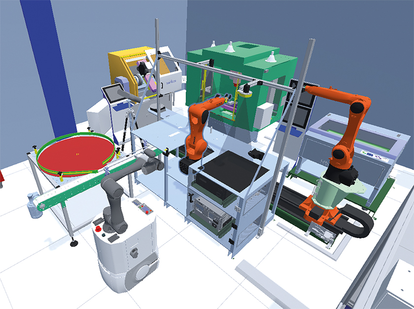

Exemple de projet
Un projet intéressant à base d'automatisation pourrait être une ligne de production robotisée pour l'assemblage de pièces électroniques. Cette ligne utilise des robots industriels pour effectuer des tâches répétitives et précises, telles que l'assemblage des composants sur des circuits imprimés, le soudage et l'inspection visuelle des produits finis. L'automatisation permet non seulement d'augmenter la productivité, mais aussi de réduire les erreurs humaines, d'optimiser les coûts et de garantir une qualité constante.

